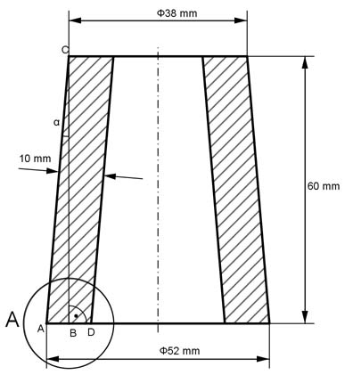
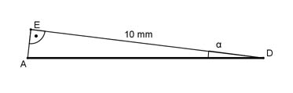

Aufgabe 290 Wie groß ist das Volumen V der Lagerbuchse?  V = Kegelstumpf K1 - Kegelstumpf K2 Im Dreieck ABC gilt: 52 mm - 38 mm AB = ---------------- = 7 mm 2 AB 7 mm tan α = ---- = --------- = 0,1167 --> α = 6,66° BC 60 mm Einzelheit A:  Im Dreieck ADE gilt: DE cos α = ---- |*AD AD AD * cos α = DE | : cos α DE 10 mm 10 mm AD = ------- = ----------- = --------- = 10,07 mm cos α cos 6,66° 0,9933 Volumen K1: л * h K1 = -------- * (r1² + r1 * r2 + r2²) 3 r1 = 52 mm/2 = 26 mm r2 = 38 mm/2 = 19 mm л * 60 K = -------- * (26² + 26 * 19 + 19²) mm³ 3 л * 60 K1 = -------- * (676 + 26 * 19 + 361) mm³ 3 K1 = 96 147 mm³ = 96,1 cm³ Volumen K2: л * h K2 = -------- * (r3² + r3 * r4 + r4²) 3 r3 = 26 mm - 10,07 mm = 15,93 mm r4 = 19 mm - 10,07 mm = 8,93 mm л * 60 K2 = --------- * (15,93² + 15,93 * 8,93 + 8,93²) mm³ 3 л * 60 K2 = -------- * (253,8 + 15,93 * 8,93 + 79,7) mm³ 3 K2 = 29 877 mm³ = 29,8 cm³ V = K1 - K2 = 96,1 cm³ - 29,8 cm³ = 66,3 cm³